A year after Hurricane Maria many Puerto Ricans still struggled to pick up all the pieces in their lives in hopes to return to normalcy. Some spent almost a year without electricity, some continue living with blue tarps as roofs, and some lost absolutely everything. For Puerto Ricans that experienced the hurricane first-hand there will always be a "before" and "after" Hurricane Maria.
Click on their pictures to learn their stories.
“Abuela! Maria took everything!”


Maria Gonzalez lost everything after Hurricane Maria slammed into Puerto Rico. The storm’s deluge forced authorities to open a flood gate in the Rio de la Plata dam. Toa Baja residents were given no warning and in a matter of minutes her home and many others were flooded. Photo by Claudia Perez Brito.
“God opened up all the faucets from the sky.”

Harry and Vivian are residents of Utuado and the owners of what was known as Rancho Marina. It was a restaurant that was rated highly on TripAdvisor but was destroyed by the hurricane. Their little slice of paradise that took them years to build up was gone overnight. Photo by Kaitlin Hall.
“Diesel, oil, air filter, diesel filter, oil filter — I have spent $60,000.”

Jose Saldaña better known as Tonti lives in "El Yunque National Forest". On Aug.14 when Puerto Rico's Power Authority announced electricity had been restored to 100 percent of their clients, Tonti still remained without power. At that point he'd spent over $60,000 on generators to keep his business open and had been almost a year without power. Photo by Kaitlin Hall.
“I said, ‘My God, do not let anything happen to me.”

Gregoria Delgado Aponte lives in the mountains of Trujillo Alto. The night of Hurricane Maria she witnessed her roof be torn off plank by plank. A year after the hurricane, a church group are the ones that helped her rebuild her home. Aponte faced the problem of not having a property title, which is a requirement by FEMA to receive assistance in the rebuilding homes. Photo by Kaitlin Hall.
“Everything needs to be demolished and rebuilt again.”

Pablo Soto Soto lives in Yabucoa and a year after Hurricane Maria he still lives with a blue tarp as a roof. Soto lacks a property title, a requirement by FEMA to receive help, like many other Puerto Ricans. This has been a huge impediment for him to receive the appropriate help to finish repairing his home. Photo by Claudia Perez Brito.
“It took the house. It took this one, it took that one.”


Modesto Viruet rode out the storm in the basement of his home, with his wife, who had to sweep the water out the door to keep the area from flooding. But they could not save their Utuado house. Photo by Gisselle Garcia.
“Right now I eat one time a day.”

Hurricane Maria took Carlos Bonnet-Vargas' kiosk, inventory and savings. Then, he was denied financial assistance and food stipends from FEMA and the Puerto Rican government.His energy bills have gone up, and he now eats only once a day because that’s all he can afford. Photo by Gisselle Garcia.

 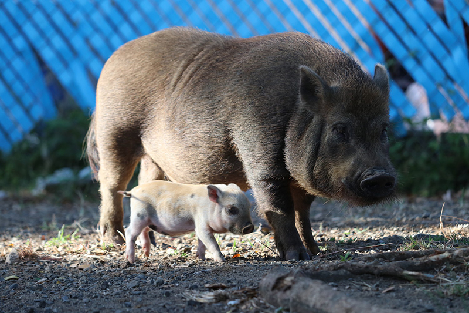
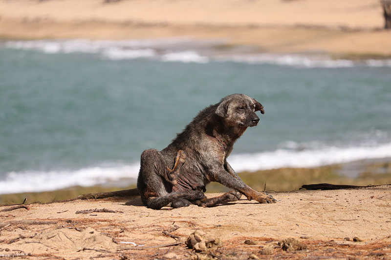
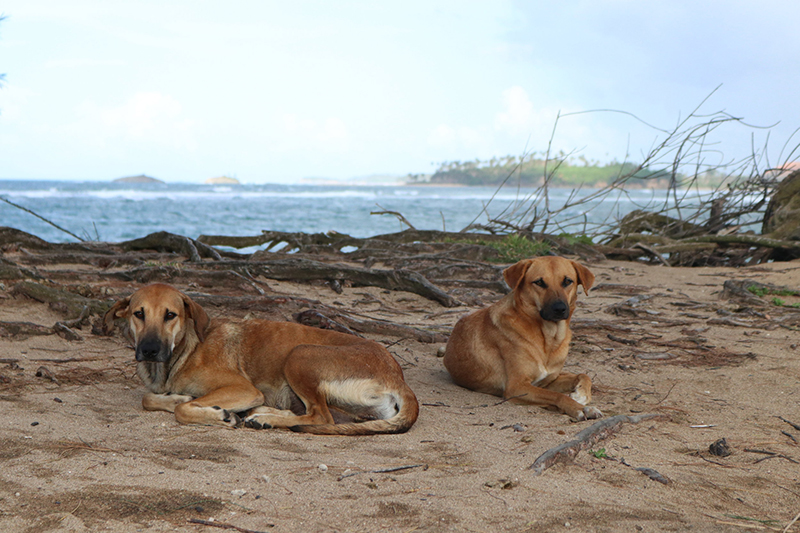
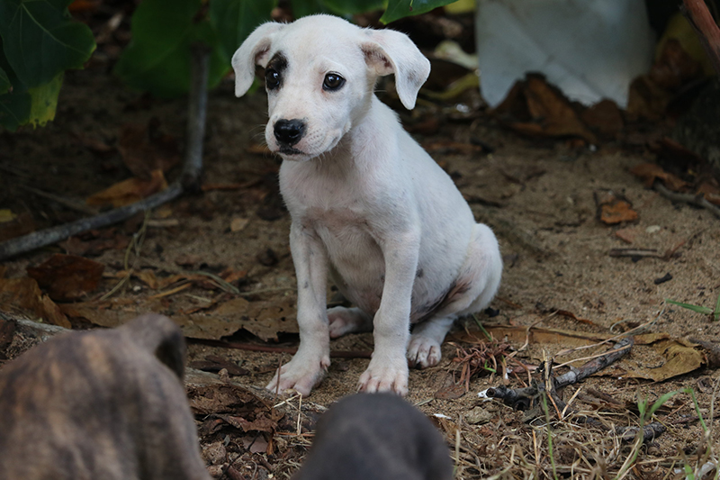
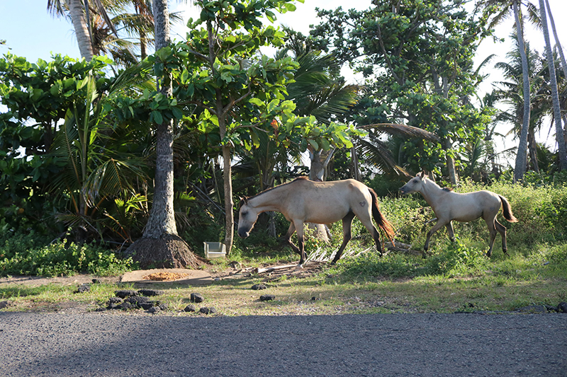
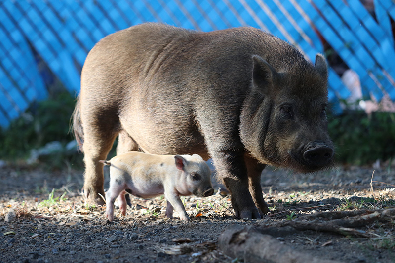
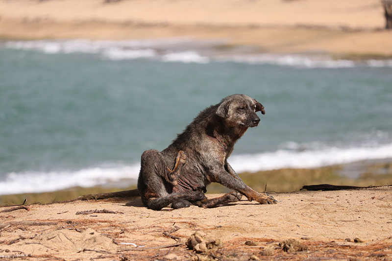
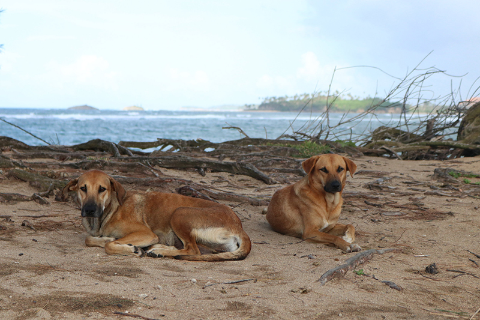
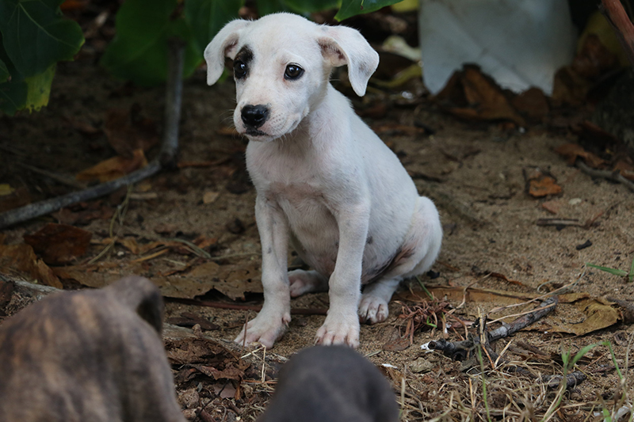
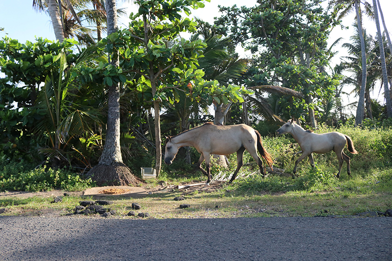


 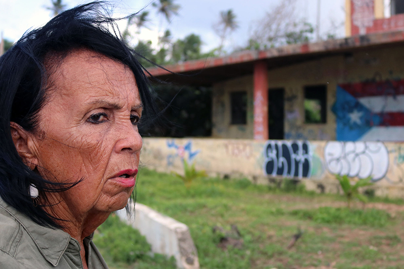
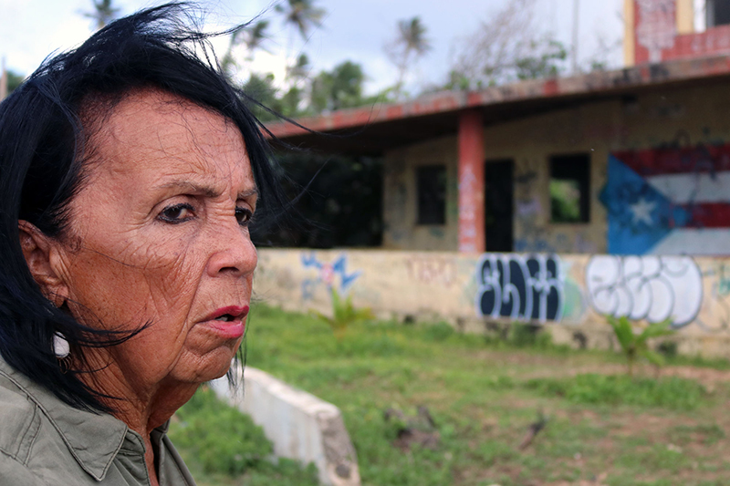